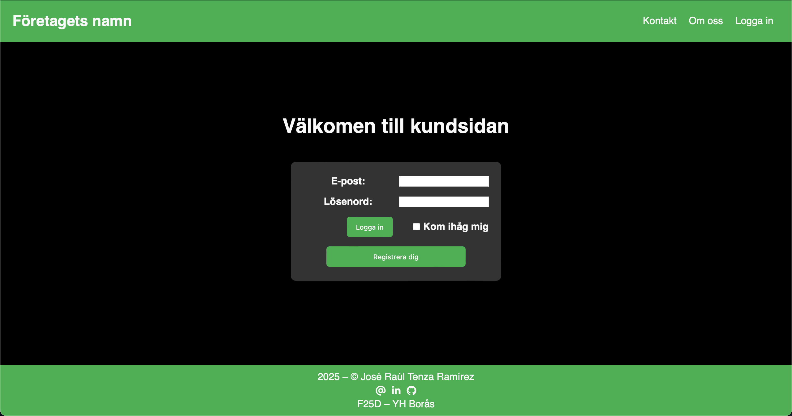

José Raúl Tenza Ramírez
Front-End utvecklare och musiker
Om mig
Portfolio
Log in sida
Det här är mitt första projekt som Front-End utvecklare. Här skapar jag en enkel log in sida. Arbete pågå. 🚧
Profilsida
Mitt andra projekt som Front-End utvecklare är precis den här siddan du läser nu. Arbete pågå. 🚧

R. Strauss: Eine Alpensinfonie
Inspelning av Richard Strauss Eine Alpensinfonie med Göteborgs Symfoniorkester under ledning av Kent Nagano.
R. Strauss: Ein Heldenleben – Tod und Verklärung
Inspelning av Richard Strauss Ein Heldenlebend och Tod und Verklärung med Göteborgs Symfoniorkester under ledning av Kent Nagano.
J. Sibelius: Symphony No. 1 & En Saga
Inspelning av Jean Sibelius simfoni nr. 1 och En Saga med Göteborgs Symfoniorkester under ledning av Santtu-Matias Rouvali.
J. Sibelius: Symphony No. 5
Inspelning av Jean Sibelius simfoni nr. 5 med Göteborgs Symfoniorkester under ledning av Santtu-Matias Rouvali.
KlassiskBOBHUNDkonsert(Live GSO)
Live inspelning av en konsert med Bob hund och Göteborgs Symfoniker.
Johanna Fridolfsson: Sandvargen
Inspening av Johanna Fridolfssons barnopera Sandvargen med Göteborgs Operan.
Mike Svoboda: Once Around the World
Världspremiär av Once Around the World skriven av Mike Svoboda med Lucerne Festival Alumni Ensemble och Mike Svoboda som dirigent och berättare. 09.04.2017 Neubad (11am), Luzern – Schweiz.
Olga Neuwirth: Trurliade – Zone Zero för slagverk solo och orkester
Världspremiär av Trurliade – Zone Zero för slagverk solo och orkester skriven av Olga Neuwirth med Orchestra of the Luerne Festival Academy. Dirigent Susanna Mälkki och slagverk solo Victor Hanna. 27.08.2016 KKL Luzern – Schweiz.